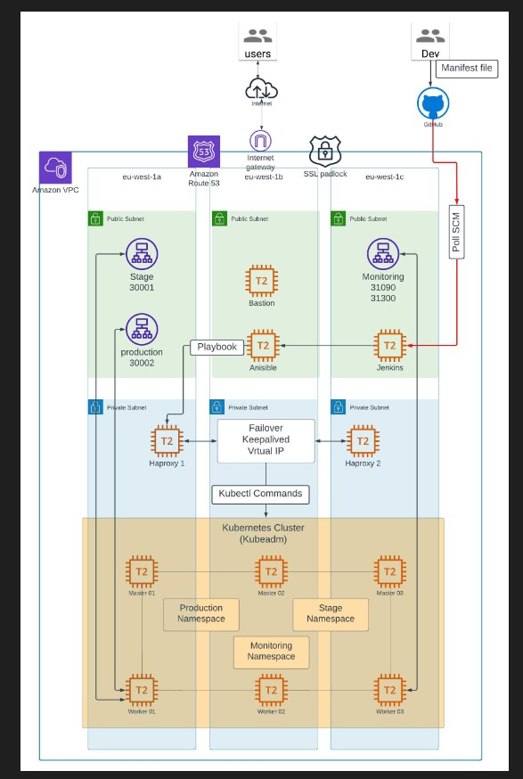
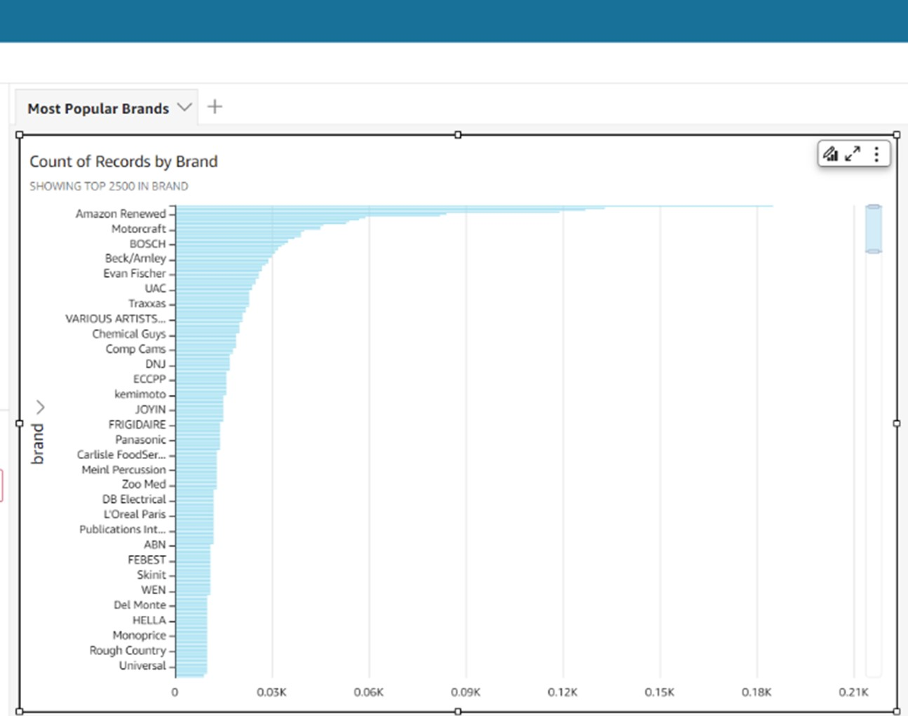
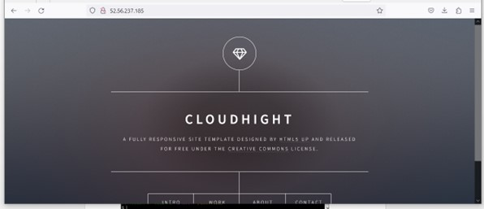

I am a results-oriented DevOps/Cloud Engineer, specializing in automation and infrastructure management. With hands-on expertise across a diverse spectrum of DevOps tools and practices, including cloud technologies, containerization, configuration management, and monitoring, I have a proven track record of implementing robust CI/CD pipelines using a technology stack that includes AWS, GitHub, Terraform, Jenkins, Ansible, Docker, Kubernetes, New Relic, Prometheus, and Grafana.
I possess a strong ability to collaborate effectively with cross-functional teams to optimize the Software Development Life Cycle (SDLC). My valuable transferable skills acquired in Agile team environments include strategic planning, relationship building, and project management.
Notably, I successfully led and significantly contributed to an innovative auto-discovery project utilizing Ansible, resulting in a marked improvement in infrastructure management efficiency and scalability. I am highly motivated and continuously seek opportunities to enhance and apply my skills in dynamic and challenging environments.

This project involved developing and implementing a containerization solution for a Pet Adoption web application using Docker and Jenkins. The goal was to streamline deployment, improve scalability and portability.
A Jenkins pipeline was created to automate the build, test and deployment process. It checked out the source code, built the app in a Docker container, ran unit tests, created a Docker image, pushed it to a registry, and deployed the containerized app to a Kubernetes cluster.
Key benefits included consistent deployments across environments using containers, ability to scale the containerized app up/down easily, portability of the Docker images, automated CI/CD workflow reducing manual effort, and reproducible environments for building/testing.
The project showcased proficiency with Docker, Kubernetes and implementing automated CI/CD pipelines in Jenkins. It improved efficiency, reliability and scalability of deploying the Pet Adoption application.

The Sock Shop is a microservices-based application deployed on an AWS cloud environment using Kubernetes for container orchestration. The application consists of several microservices split across three namespaces: Production, Stage, and Monitoring.
The infrastructure is set up within an Amazon VPC, which has three public subnets and three private subnets across three availability zones (eu-west-1a, eu-west-1b, eu-west-1c) for high availability and fault tolerance.
The public subnets host the Stage, Monitoring, and Bastion instances, while the private subnets host the Production instances, Haproxy load balancers, and the Kubernetes cluster (Kubeadm).
The application is exposed to users via an Amazon Route 53 DNS and an Internet Gateway, secured by an SSL padlock and an Amazon Route 53 service.
The Kubernetes cluster is managed using Kubectl commands, and the node components (Master 01, Master 02, Master 03, Worker 01, Worker 02, Worker 03) are distributed across the private subnets. The Haproxy load balancers provide load balancing and failover capabilities for the application.

The primary objective of this project is to generate visualized data using Amazon QuickSight.
To achieve this goal, I initiated the project by acquiring a substantial dataset, subsequently uploading it to Amazon S3. Following this data preparation phase, I proceeded to craft a comprehensive dashboard utilizing the features and functionalities offered by Amazon QuickSight.
.

In this project, I implemented a Continuous Integration and Continuous Deployment (CI/CD) pipeline using Jenkins, an open-source automation server. The primary goal was to streamline the software development process, automate the build, testing, and deployment stages, and facilitate faster and more frequent releases.
The project involved setting up a Jenkins server on an Amazon Web Services (AWS) Elastic Compute Cloud (EC2) instance running Red Hat Enterprise Linux (RHEL). Jenkins was integrated with various tools and technologies to create a comprehensive CI/CD pipeline.

In this project, I demonstrated the process of manually installing and configuring the Apache Web Server, a widely-used open-source web server software. The goal was to gain hands-on experience in setting up and customizing a web server environment from scratch.

In this project, I leveraged the power of Amazon Web Services (AWS) and the Apache Web Server to deploy and host a static website securely and reliably on the cloud.